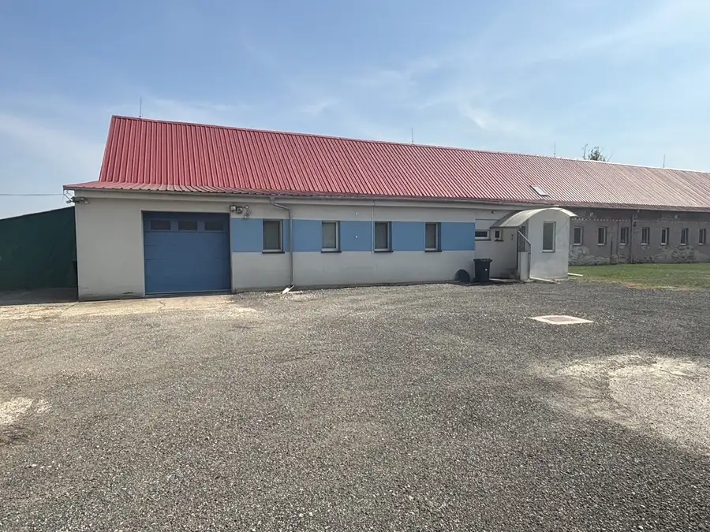
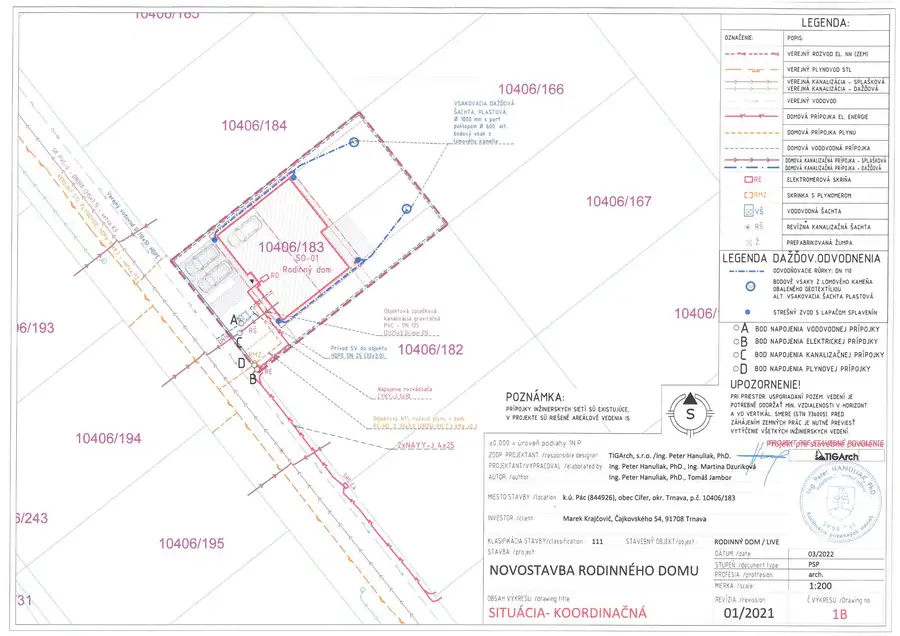
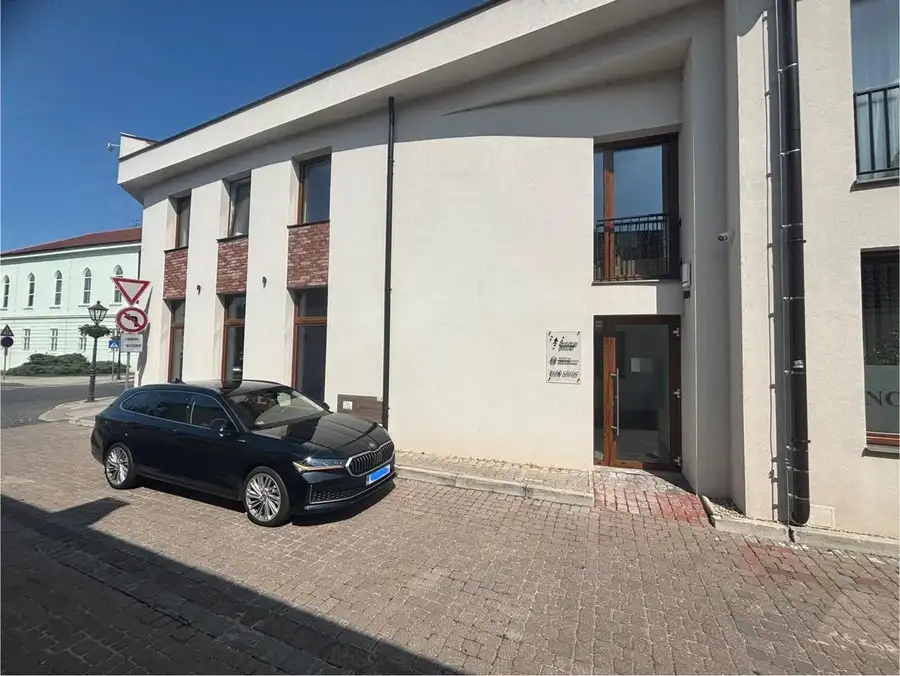

Na prenájom 3-izbový zariadený byt saleziánska ulica, Trnava
Trnava
- Dispozícia3-izbový
- Plocha84.79 m²
- Poschodie2.
- StavČiastočná rekonštrukcia
- VlastníctvoOsobné
O nehnuteľnosti
CASMAR RK ponúka na prenájom priestranný a kompletne zariadený 3-izbový byt nachádzajúci sa na Saleziánskej ulici v Trnave, situovaný na 2. poschodí bytového domu s výťahom.Byt svojou dispozíciou a vybavením predstavuje ideálne bývanie. Celková výmera podlahovej plochy bytu a pivnice je 81,46 m², pričom k bytu prislúcha aj loggia s výmerou 3,43 m².DISPOZÍCIA A VYBAVENIEByt pozostáva z:priestranná vstupná predsieň,3 samostatné nepriechodné izby,samostatná kuchyňa,kúpeľňa s vaňou,samostatná toaleta,loggia,pivnicaIzby ponúkajú dostatok priestoru na pohodlné bývanie a sú zariadené. Byt je pripravený na nasťahovanie bez potreby ďalšieho zariaďovania.Veľkou výhodou je samostatná kuchyňa, dostatok úložného priestoru a praktická dispozícia bytu. K dispozícii je tiež loggia vhodná na oddych či posedenie.IDEÁLNE AJ PRE ŠTUDENTOVDispozícia bytu umožňuje komfortné bývanie napríklad pre 5 študentov:I. izba – 2 študentiII. izba – 2 študentiIII. izba – 1 študentByt tak ponúka praktické riešenie pre skupinu kamarátov alebo spolužiakov, ktorí hľadajú spoločné bývanie v Trnave.Voľný od: 15.10.2026Cena prenájmu: na vyžiadanie v RK.Info a obhliadky: Michal Ondica 0950 483 165 , ondica@casmar.sk © Popis nehnuteľnosti, text a foto - dokumentácia sú majetkom a autorským dielom spoločnosti CASMAR REALITY s.r.o.
Parametre
| Cellar area | 4.99 m² |
|---|---|
| Cena vrátane energií | Nie |
| Druh | 3 izbový byt |
| Dátum zverejnenia | 7. 10. 2026 |
| Plocha lodžie | 3.43 m² |
| Podlažie | 2 |
| Počet izieb / miestností | 3 |
| Počet lodžií | 1 |
| Počet pivníc | 1 |
| Stav nehnuteľnosti | Čiastočná rekonštrukcia |
| Telekomunikácie | Internet, Satelit |
| Typ | Prenájom |
| Vlastníctvo | Osobné |
| Vybavenie | Lodžia, Pivnica, Výťah |
| Vykurovanie | Ústredné |
| Úžitková plocha | 84.79 m² |
Kde to je


Mohlo by Vás zaujímať

Komerčné priestoryNové10 2 000 €Na prenájom! výrobná hala s veľkým pozemkom - Cífer Cífer 1100 m² CASMAR RK, vo výhradnom zastúpení klienta, ponúka na prenájom výrobnú a skladovú halu nachádzajúcu sa na veľkom pozemku v obci Cífer.Aktuálne…
PozemokNové4 108 500 €Na predaj!!! stavebný pozemok s projektovou dokumentáciou Cífer 485 m² RK CASMAR, vo výhradnom zastúpení klienta, ponúka na predaj stavebný pozemok s výmerou 485m2 a vypracovanou projektovou dokumentáciou rodinného domu…
Komerčné priestoryNové10 3 000 €NA PREDAJ priestor v centre Trnavy – Halenárska ulica Trnava 145.4 m² CASMAR RK, vo výhradnom zastúpení klienta, ponúka na predaj: Klimatizovaný nebytový priestor s možnosťou preklasifikovania na byt v centre mesta…